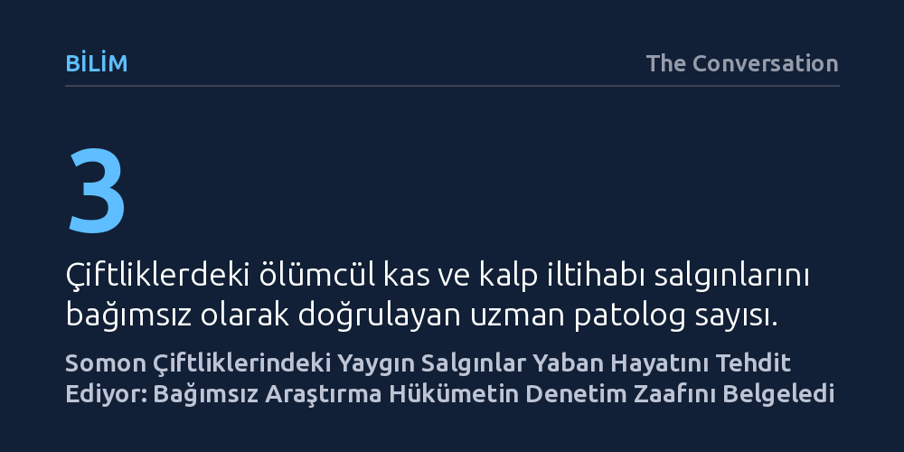

BILIM · The Conversation · 2026-10-26
Kanada'daki somon çiftliklerinin çoğunda yaban somonlarını tehdit eden ölümcül virüs salgınları saptandı. Bağımsız araştırma, hükümetin bu salgınları hafife alarak virüsü hastalık etkeni saymadığını ve sanayi çıkarları uğruna yaban hayatını riske attığını gösteriyor.
Resmi çevre kurumlarının sanayi çıkarları uğruna bilimsel gerçekleri çarpıtabileceğini ve yaban hayatını korumada yerli halklarla bağımsız araştırmacıların denetiminin hayati olduğunu gösteriyor.

Kanada'nın Pasifik kıyılarında faaliyet gösteren açık ağ kafes somon çiftlikleri, uzun süredir çevre örgütleri ile sanayi arasında büyük bir tartışma konusu. Ancak balık yetiştiriciliği yapılan bu tesislerin iç dinamikleri ve sağlık verileri, şirketlerin mülkiyet sınırları ve ticari gerekçeler nedeniyle kamuoyundan ve bağımsız araştırmacılardan büyük ölçüde saklanıyordu. British Columbia kıyılarında yürütülen yeni bir araştırma, bu kapalı kapıların ardındaki tablonun kamuoyuna yansıtılandan çok daha endişe verici olduğunu ortaya koydu.
Araştırmacılar, inceledikleri çiftliklerin ezici çoğunluğunda kalp ve iskelet kası iltihabına (HSMI) yol açan viral salgınlar tespit etti. Balıkların kalbinde ve kas dokusunda ağır tahribata yol açarak yüzme kabiliyetlerini ellerinden alan bu virüs, kafeslerde münferit değil, yaygın salgınlar halinde görülüyor. Bulguların en dikkat çekici boyutu ise tespit edilen vaka yoğunluğunun, Kanada Balıkçılık ve Okyanuslar İdaresi'nin (DFO) resmi raporlarında bildirdiği oranların çok üzerinde olması.
Bu araştırmayı bilim dünyasında benzersiz kılan unsur, sanayiyle hiçbir organik bağı bulunmayan bağımsız araştırmacıların çiftliklere benzeri görülmemiş bir serbestlikle erişim sağlayabilmesi oldu. Bu olanak, bölgenin kadim sahipleri olan Mamalilikulla, ’Na̱mǥis ve Kwikwasut’inux̱w Haxwa’mis Yerli Milletleri ile eyalet hükümeti arasında imzalanan Broughton Su Ürünleri Geçiş Girişimi sayesinde hayata geçirildi. Yerli yönetimler, kendi geleneksel deniz alanlarını koruma iradelerini kullanarak bağımsız bilim heyetine çiftliklerin kapılarını açtı.
British Columbia Üniversitesi, Pasifik Somon Vakfı ve resmi kurum araştırmacılarından oluşan bağımsız ekip, açık ağ kafesleri bir yılı aşkın süre boyunca aralıksız denetledi. Alınan örnekler endüstriden bağımsız üç ayrı patolog tarafından incelendi ve HSMI teşhisi şüpheye yer bırakmayacak biçimde doğrulandı. Bu bağımsız teyidin ardından ilgili Yerli Milletler, topraklarında kurulu bulunan somon çiftliklerinin derhal kaldırılması kararını uygulamaya koydu.
Ticari somon yetiştiriciliğinde kullanılan açık ağ kafesler, balıkları deniz suyundan yalnızca ince bir ağ örgüsüyle ayırıyor. Bu açık yapı nedeniyle kafeslerin içindeki atıklar, parazitler ve mikroskobik virüsler akıntılar yoluyla serbestçe açık denize karışıyor. Çiftlik havuzlarındaki on binlerce balık arasında hızla çoğalan piscini ortoreovirüsü (PRV), kontrolsüz biçimde vahşi deniz ekosistemine sızıyor.
Önceki bilimsel araştırmalar, çiftlik kaynaklı bu virüs sızıntısının göç eden yaban somonları için ölümcül olduğunu zaten kanıtlamıştı. Virüsü kapan yaban somonları, kas ve kalp dokularındaki iltihaplanma nedeniyle nehirlerin akıntısına karşı yüzemiyor, avcılardan kaçamıyor ve üreme alanlarına ulaşamadan tükeniyor. Yaban somonu popülasyonlarında son yıllarda kaydedilen dramatik çöküşün gerisinde, çiftliklerden çevreye yayılan bu kontrolsüz patojen transferi yatıyor.
Araştırmanın gözler önüne serdiği en çarpıcı olgulardan biri de Kanada federal yönetiminin bilimsel verilere karşı sergilediği kayıtsız tutum. Kanada Balıkçılık ve Okyanuslar İdaresi (DFO), bağımsız araştırmacıların ve hakemli dergilerin bulgularını ısrarla görmezden geliyor. Kurum, diğer somon üreticisi ülkelerdeki standartların çok ötesinde yapay teşhis kriterleri uygulayarak bölgede salgın olmadığı yanılsamasını sürdürüyor. Üstelik bu katı kriterlerin bizzat su ürünleri sanayisi temsilcileriyle ortaklaşa belirlenmiş olması derin bir çıkar çatışmasına işaret ediyor.
Ezici bilimsel kanıtlara rağmen DFO, 2019 yılından bu yana PRV virüsünü bulaşıcı bir hastalık etkeni olarak kabul etmeyi ve yönetmeliklerini güncellemeyi reddediyor. Kurumun bir yandan balık çiftliklerini teşvik ederken diğer yandan yaban hayatı denetlemekle görevli olması, kurum içi bilim insanlarının dahi eleştirdiği yapısal bir zaaf yaratıyor. Federal hükümetin çiftlikleri kaldırma sözünü sürekli ertelemesi üzerine 'Namgis Yerli Milleti 2024 yılında yargı sürecini yeniden başlattı. Bu durum, bilimsel gerçeklerin kamu politikalarına yansıyabilmesi için bağımsız bilimsel denetimin ve yerli halkların gözetiminin ne denli vazgeçilmez olduğunu gösteriyor.